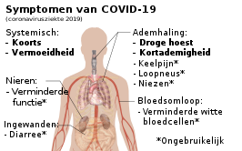

We hebben het vaak over ‘corona’, maar officieel heet de ziekte COVID-19. De ziekte wordt veroorzaakt door een nieuw coronavirus (SARS severe acute respiratory syndrome -CoV coronavirus -2). De klachten kunnen lijken op een verkoudheid. De ziekte kan een ernstige longontsteking veroorzaken, waar soms ook mensen aan overlijden.
Wat is Covid-19?
COVID-19 is de ziekte die wordt veroorzaakt door een nieuw coronavirus (SARS-CoV-2). De ziekte kan luchtwegklachten en koorts veroorzaken en in ernstige gevallen ademhalingsproblemen. Het virus wordt verspreid door hoesten en niezen. Via druppeltjes komt het zo in de lucht. Als andere mensen die druppeltjes inademen, of bijvoorbeeld via de handen in de mond, neus of ogen krijgen, kunnen zij besmet raken met het virus.
